私有库创建
1.准备知识
终端（启动台->其他->终端）
- 一些基础命令：pwd：查看当前路径（位置），cd XXX ：进入到某个文件夹，ls：查看当前路径下的文件夹
项目托管平台github，gitlab等，我选择以gitlab（https://gitlab.com/）为例（注册需要翻墙）
电脑已经安装了pod ，参考：https://www.jianshu.com/p/9e4e36ba8574
2.开始动手
2.1 在gitlab上创建一个自己的远程私有索引库，用来存放私有框架的详细描述信息.podspec文件，（我的索引库名叫MyProjectSpec，这个索引库，我们已经帮你们创建好了的）
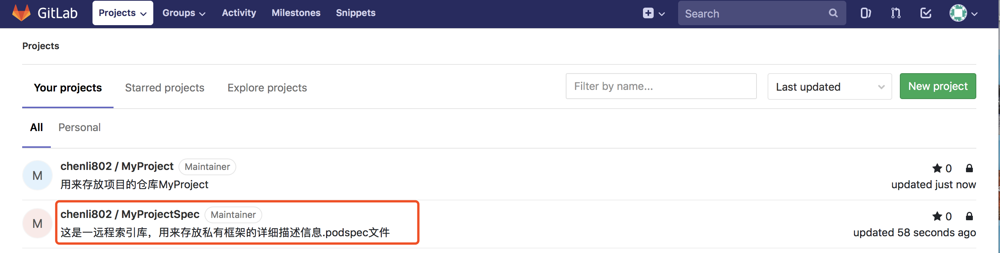
2.2 创建本地的私有索引库文件夹，并与远程私有索引库进行关联
2.2.1 在终端中输入：pod repo （作用：查看本地已存在的索引库，我的电脑里已存在7个本地索引库，每个人的电脑不一样。）
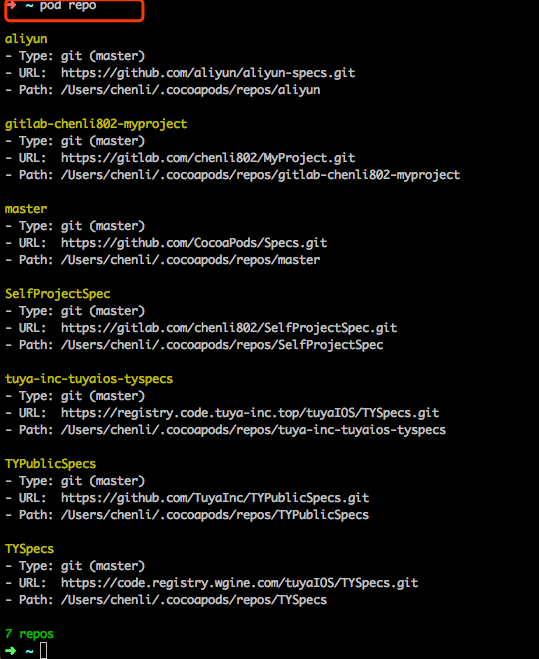
2.2.2 pod repo add MyProjectSpec https://gitlab.com/chenli802/MyProjectSpec.git [替换成自己的索引库名，git地址，详见下图] (作用：添加本地私有索引库并与远程私有库进行关联)
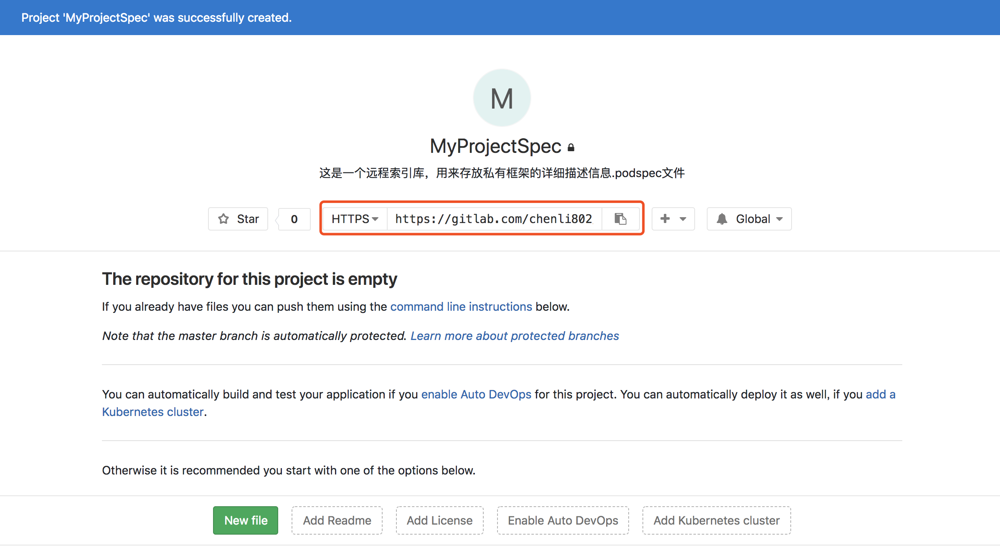
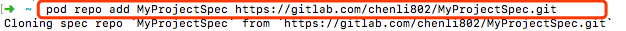
2.2.3 pod repo (再次查看本地索引库，查看是否添加本项目的索引库)
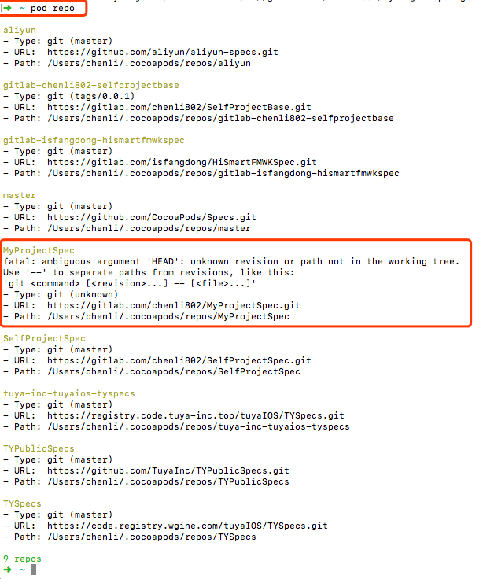
2.3 在gitlab上创建一个用来存放项目的仓库MyProject（这个项目，我们已经帮你们创建好了的）
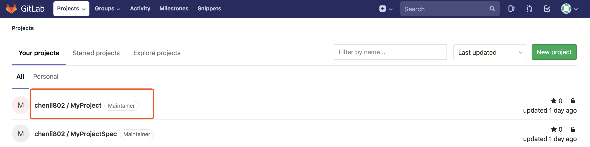
2.4 快速创建工程
2.4.1 首先选择一个地址用来存放该项目，进入到项目要存放的路径下：我选择放在桌面上：cd /Users/chenli/Desktop, ( chenli —>替换成自己的电脑用户名)，然后pod lib create MyProject --template-url=https://github.com/TuyaInc/pod-template.git（快速创建一个pod项目,MyProject ->替换成自己的项目名）

2.4.2 删掉默认生成的Replace.m文件，在Classes文件中至少创建一个文件（如默认生成的MyProjectImpl.h和MyProjectImpl.m文件），使得Classes文件不为空，不然后面提交不上去，再cd回到该项目的Example文件路径下(cd /Users/chenli/Desktop/MyProject/Example )，重新执行pod install操作
新建.h和.m文件：

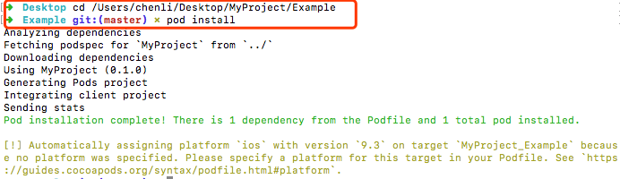
2.5 将上面的项目工程，提交到第2.3步创建的远程代码仓库MyProject，具体步骤如下：
- cd /Users/chenli/Desktop/MyProject (进入到项目文件夹)
- git status （查看更改的文件）
- git add -A （add 后面有空格，大写A,提交增加，删除，修改的全部信息）
- git commit -m '创建项目工程'
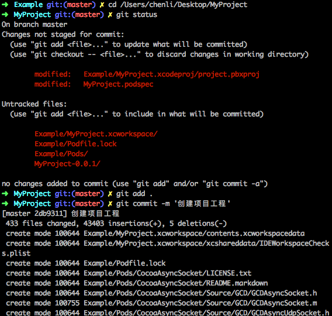
编辑MyProject项目工程里的MyProject.podspec文件 （development pods->MyProject->pod->MyProject.podspec）
tag：建议一开始为0.0.1
summary写项目的简要说明
source写该项目的gitlab地址，参考第2.2.2步
source_files :放源程序，不能为空
本项目依赖的官方提供的 framework，没需要可以不写：
s.framework = 'CoreData'
本项目被其他工程引入时，会导入MyProject/Classes 目录下的.h和.m文件
s.source_files = 'MyProject/Classes/*/'
本项目被其他工程引入时，会导入MyProject/Assets 目录下的资源文件，如果资源文字暂时没有的话，要隐藏这句话，不然会提交不上去：
s.resources = ['MyProject/Assets/*.{png,xib,plist,xcassets,bundle}']
代码中包含静态库：
s.vendored_libraries = '/Pod/Classes/*.a'
该项目所依赖的其他库,比如：
s.dependency 'AFNetworking', '~> 2.3'
s.dependency 'MBProgressHUD '
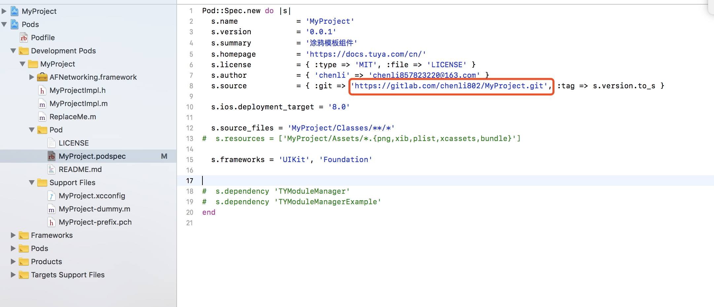
pod lib lint （验证上一步编辑的 MyProject.podspec文件）
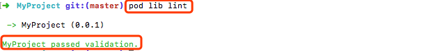
- git status
- git add -A
- git commit -m '编辑spec文件'
- git remote add origin https://gitlab.com/chenli802/MyProject.git (将本地库与远程代码仓库进行关联，git地址换成自己的)
- git push origin master (提交到远程仓库)
- git tag '0.0.1' (要与MyProject.podspec文件中的tag值保持一致)
- git push --tags (将tag提交到远程)
- pod spec lint --allow-warnings（验证远程是否正确）
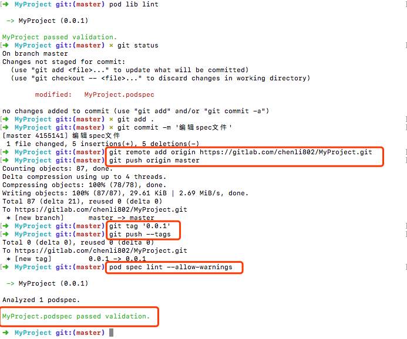
2.6 pod repo push MyProjectSpec MyProject.podspec （将podspec文件提交到远程的私有索引库）
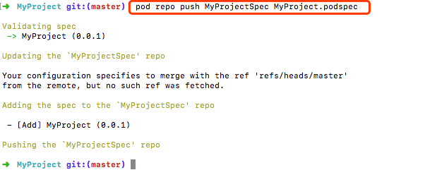
表示提交成功，此时远程私有库到此就已结束
注意：提交后，依然会验证 podspec文件，验证通过后 会自动上传到在远程spec索引库,不信的话你可以看看在第2.1步创建的Spec远程私有索引库，是不是多了一个[MyProject/ 0.0.1]文件！
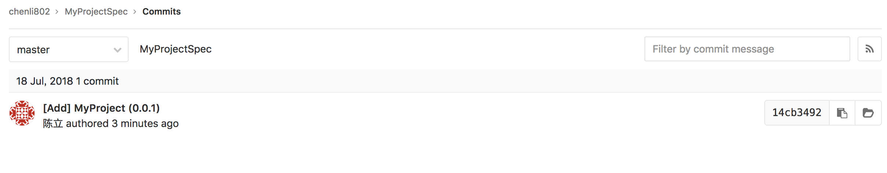
2.7 添加及修改项目工程的内容，比如创建新的.h.m文件，添加依赖库
2.7.1 添加.h和.m文件（要创建在Classes文件夹中，因为在podspec文件中指明了： s.source_files = 'MyProject/Classes/*/' ,[本项目被其他工程引入时，会导入MyProject/Classes 目录下的.h和.m文件]）
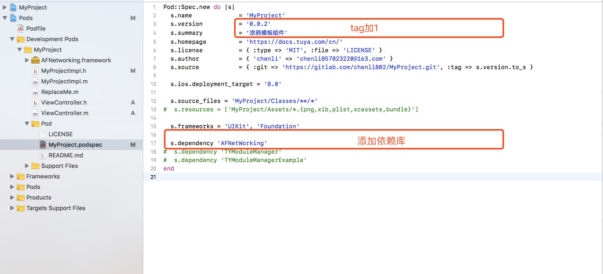
cd /Users/chenli/Desktop/MyProject (进入工程文件夹)
git status
git add .
git commit -m '添加及修改项目工程 '
git push origin master
git tag '0.0.2' (要与MyProject.podspec文件中的tag值保持一致)
git push --tags
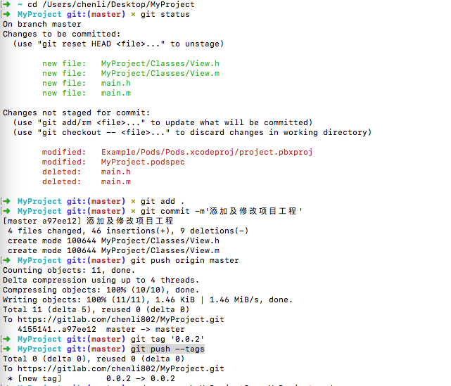
- pod repo push MyProjectSpec MyProject.podspec （更新远程索引库）
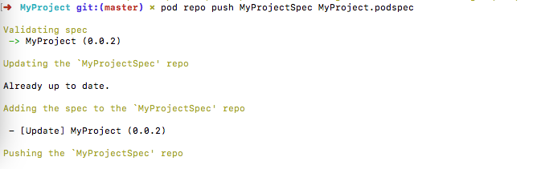
2.7.2 添加framework：
第一种：直接引用系统提供的.framework
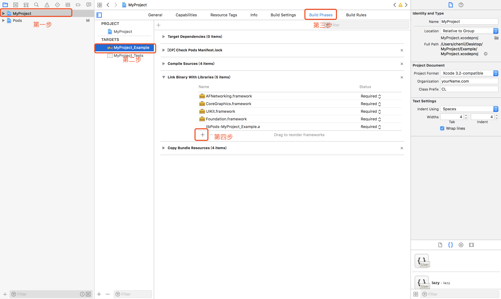
第二种：引用第三方提供的.framework
下载好所需要的第三方提供的.framework
将第三方.framework文件拷贝到工程所处的Classes文件夹中
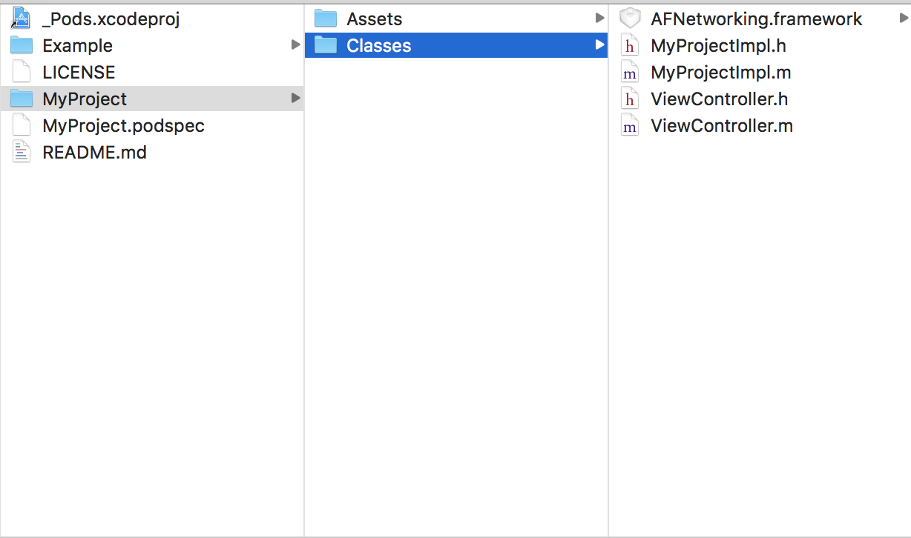
在Link Binary With Libraries中添加

第三种：通过Cocoapods来导入.framework
- 在Podfile文件中，写入你需要导入的.framework文件的名字，如 pod 'XXXXXX'
- 执行pod安装命令：pod install
修改好之后，要提交代码至远程，参考2.7.1